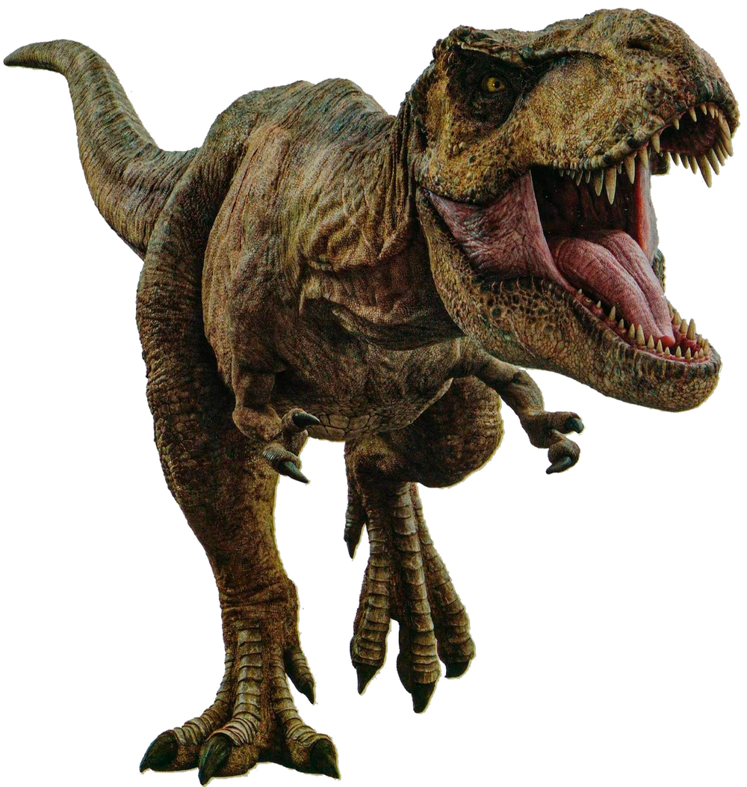

Tiranossauro
Descrição
Carnívoro
12 metros de comprimento
3,65 metros de altura
Podiam pesar 8 toneladas.
Possuía mandíbulas poderosas, sendo considerada a mordida mais forte entre todos os animais que já existiram no planeta.
Dinossauro Anterior
Próximo Dinossauro